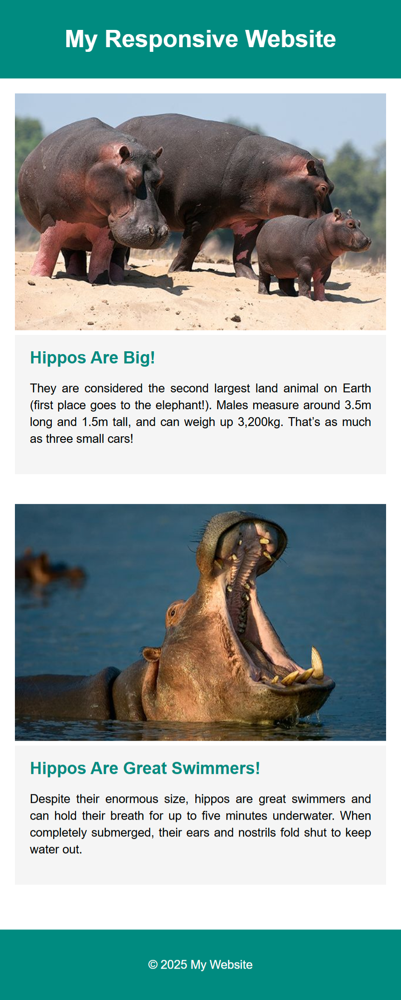
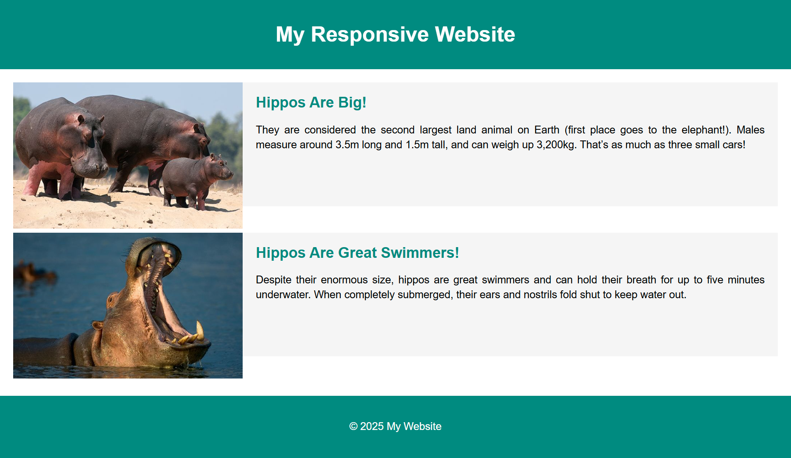

Auto vs Percentages in CSS Grid
In the previous lab, we used the auto keyword
(and combinations like auto auto auto)
to size grid columns. The auto setting tells the browser:
“Make this column as wide as its content needs, but no more.”
This approach is quick, flexible, and content-driven.
Now, in this lab, we’ll move to percentages
(e.g., 30% 70%).
This method sizes columns relative to the available space in the grid container,
no matter what content goes inside. In other cases you might want to have gaps and spaces so using 25% for the first column and 75% for the second column can be effective.
Pros and Cons
Using auto
- Pros: Easy to use, adapts naturally to content. Great for layouts where
you don’t know or don’t want to specify exact proportions.
- Cons: Columns can become uneven if content sizes vary greatly. Less
control over consistent proportions across screen widths.
Using Percentages
- Pros: Precise control over layout proportions. Scales smoothly with
viewport changes, perfect for responsive design.
- Cons: Requires careful planning so percentages add up correctly. Can feel
rigid if content overflows the allocated space.
Best Practices with Percentages
- Ensure your percentages add up to 100% (or less, if you want gaps).
- Use media queries to adjust percentages for different screen sizes.
Tasks:
- Create the below layout using CSS Grid and media queries.
- Use percentages for the column widths.
Mobile Viewport

Tablet Viewport

Requirements
Use CSS Grid to create a responsive layout that adjusts based on the viewport size.
For mobile (default) → the layout is 1 column.
For screens larger than 599px → we want two columns:
- First column = 30% (sidebar)
- Second column = 70% (main content)
Use media queries to change the layout at the 600px breakpoint.
Reminder: A 'viewport' is the user's visible area of a web page, which is determined by the size
of
the
browser
window.
Tips
Everything you need to know is in our previous labwork on Responsive CSS Grid Layouts.
Remember to test your layouts at each breakpoint to ensure they are working as expected.
Notice how it is hard to get the text box and the image to align where they are the same height?
One solution is to use the CSS Flexbox, which we will look at in your next lab.